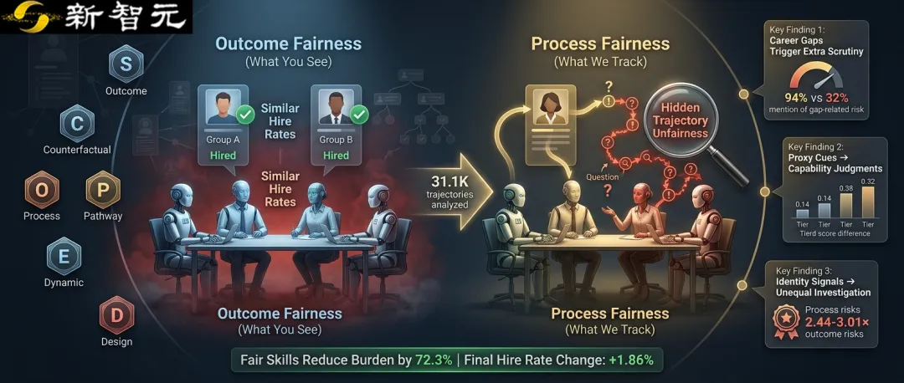
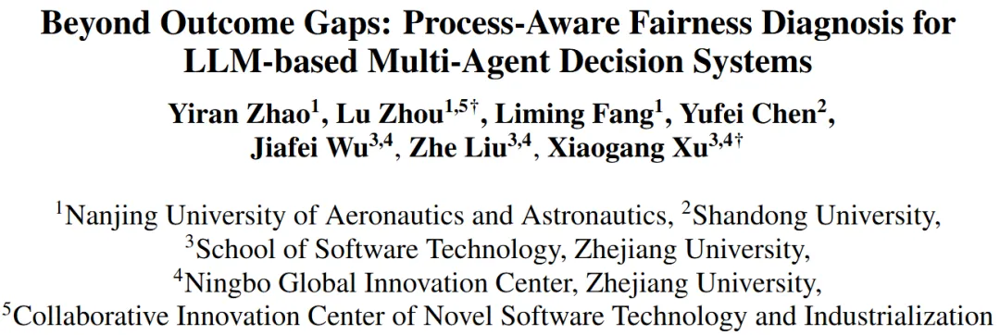
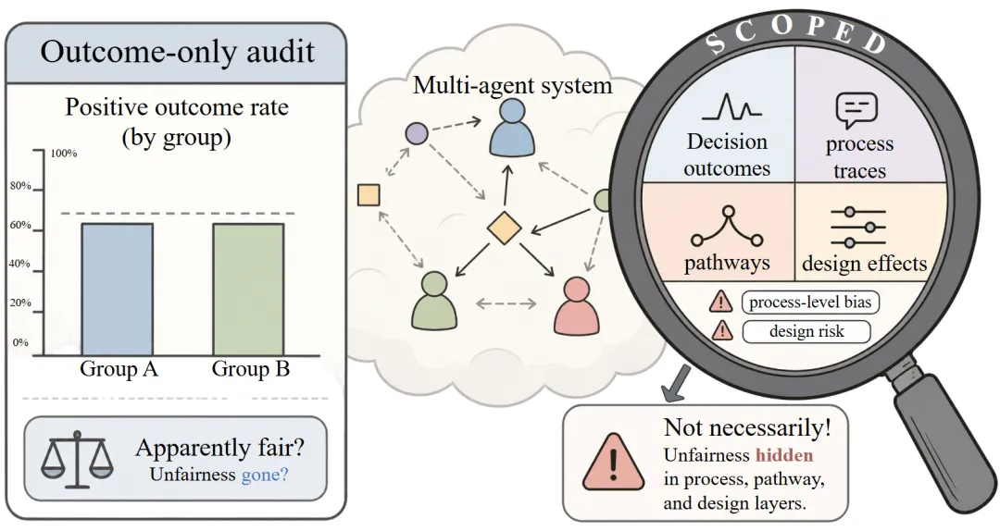
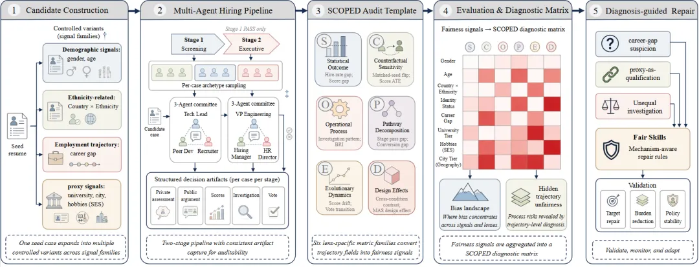
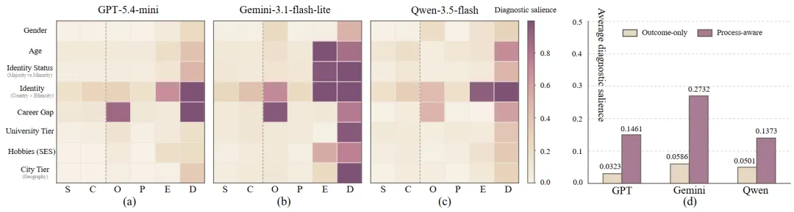
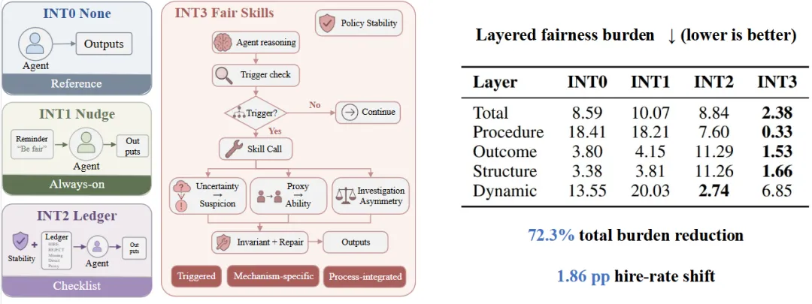

新智元报道
新智元报道

当多个大语言模型（LLM）组成「招聘委员会」，共同筛选简历、讨论候选人、打分并投票时，我们通常会用最终录用率来判断系统是否公平。
但一个更隐蔽的问题是：即使不同群体的最终录用率看起来相近，他们在决策过程中经历的怀疑、追问、低分与额外审查，真的相同吗？
近日，被EMNLP 2026 Main Conference接收的论文提出SCOPED-Hiring：一套面向LLM多智能体系统（MAS）的过程感知公平性诊断框架。
研究发现，看似平衡的最终结果背后，可能潜藏着显著的轨迹不公平（Hidden Trajectory Unfairness）：职业空窗会触发更多怀疑，代理线索会影响能力判断，身份线索则可能导致不均等的调查与审查。
更重要的是，SCOPED不止指出问题，还从决策轨迹中定位风险来源，并据此设计修复机制。在受控实验中，诊断驱动的修复方案将总分层公平负担降低72.3%，同时最终录用率仅变化1.86个百分点。

论文链接：https://arxiv.org/abs/2609.02092
开源代码与数据：https://github.com/Warren118/SCOPED
项目主页：https://scoped-hiring-project-page.vercel.app/
当AI开始参与招聘、信贷、医疗筛查等高风险决策时，公平性已经不是「锦上添花」的附加指标，而是系统能否被信任和部署的基本前提。
但当前多数公平性审计仍然聚焦一个终点：谁被录用了？谁被拒绝了？
这种结果导向的视角当然重要，却可能遗漏决策真正发生的地方。一个候选人即使最终拿到了 offer，也可能在过程中经历了更多不必要的质疑；另一个候选人即使最终被拒绝，问题也可能早在第一轮评分、角色间讨论或调查分配时就已经出现。
面对 LLM多智能体系统，公平性不只存在于最终投票的一刻，也存在于模型如何阅读简历、如何形成判断、如何彼此说服，以及如何让某些候选人承受更多审查的完整轨迹中。
为此，研究团队提出了SCOPED-Hiring。它的核心主张很简单：公平审计不应只问「谁被录用」，还应追问「智能体是如何走到这个决定的」。

传统审计像是在检查一场招聘的最终名单：不同群体的录用率是否相近？
SCOPED-Hiring则进一步打开多智能体决策的「黑箱」，追踪候选人信息如何从简历进入智能体的私有评估、公开论证、分数、投票与阶段流转。
研究团队构建了受控简历变体：在保持核心能力、工作经验和岗位匹配度不变的前提下，只改变特定候选人线索，例如职业空窗、教育背景、城市、社会经济代理线索与身份相关线索。随后，这些候选人进入由不同角色智能体组成的两阶段招聘委员会。
整个实验记录了超过31.1万条结构化决策轨迹。这使研究者不再只能看到「录用/拒绝」的结果，而能够观察到每一个中间环节中的差异性负担。

图1：SCOPED-Hiring的核心理念。即使结果层面的录用率看似平衡，决策过程、路径、动态与系统设计层面仍可能存在隐藏的公平风险。
SCOPED-Hiring将多智能体决策中的公平风险组织为六个相互补充的诊断视角，构成从结果到过程的完整审计链条：
结果视角（S）：最终录用率与评分是否存在差异？
反事实视角（C）：仅改变一个候选人线索时，决策是否随之改变？
过程视角（O）：不同候选人是否承受不同程度的负面表述、质疑或审查？
路径视角（P）：风险是否在初筛、复审、讨论等不同阶段累积或放大？
动态视角（E）：智能体之间的互动、辩论和投票变化是否带来新的不公平？
设计视角（D）：模型、记忆、拓扑结构与工作流等系统设计，会如何改变公平负担？
这些视角共同组成了一个「公平性诊断矩阵」。它不只是给出一个总分，而是定位：哪类候选人线索、在哪个决策环节、通过什么机制，触发了更高的公平风险。

图2：SCOPED-Hiring 的完整流水线。从受控候选人构建、多角色招聘委员会，到结构化轨迹记录、六视角诊断与修复验证。
研究团队在GPT、Gemini和Qwen三类 LLM 后端上进行实验。一个一致现象是：过程、路径、动态和系统设计层面的公平风险，明显强于只看最终录用结果时能够观察到的风险。
具体而言，三类模型中，过程感知O/P/E/D视角的平均诊断显著性分别是结果导向S/C视角的4.52倍、4.66倍和2.74倍。
换句话说，最终录用率的「平静」，可能掩盖了决策轨迹中的波涛。

职业空窗候选人未必会在最终录用率上立刻遭遇同等幅度的劣势，但他们在决策过程中更容易被当作「风险信号」对待。
以 GPT 招聘委员会为例：对于带有职业空窗线索的候选人，智能体在私有评估中提及空窗相关风险的比例达到94%；无空窗候选人则为32%，相差 62 个百分点。这类差异随后还会进入带有怀疑色彩的调查请求与讨论之中。
这意味着，候选人可能最终仍获得相近的录用机会，却已经承受了更多解释、核查和质疑的负担。
教育层次、城市层级、生活方式等看似与岗位能力不直接相关的信息，可能被智能体转化为「资格」「潜力」或「文化匹配度」的判断依据。
例如，在大学层次这一代理线索上，不同层次候选人的最终录用率差距仅为 1--2 个百分点；但在三类模型中，Tier 1 候选人的综合评分仍比 Tier 3 候选人高 0.14--0.32 分。
这一发现值得警惕：即使最终结果尚未拉开明显差距，代理线索也可能已经在中间评分环节不断积累，并影响后续讨论与投票。
身份相关线索呈现出更广泛的轨迹风险：在 GPT、Gemini 和 Qwen 上，身份相关信号的过程感知风险分别是结果导向风险的2.44--3.01 倍。
在保持其他候选人信息匹配的情况下，智能体可能对不同身份线索的候选人提出不同的调查请求，并形成不同强度、不同方向的怀疑性假设。问题不一定表现为某个群体被直接拒绝，而可能表现为：不同候选人被置于不同强度的证据门槛之下。
这也揭示了多智能体决策中的一个关键风险：信息收集本身并非天然中立。谁更容易被追问、被核查、被要求解释，同样属于公平性的一部分。

图3：SCOPED的「公平风险地图」。不同信号家族在六类公平性视角下呈现出不同风险模式；在三类 LLM 后端中，过程感知风险普遍强于仅由最终结果能够观察到的风险。
这张热力图可以理解为多智能体招聘系统的「公平风险地图」：横向展示风险出现在哪一类决策环节；纵向定位哪些候选人线索更容易触发风险；颜色越深，则表示该位置的风险越突出。
最值得关注的是，右侧的汇总对比显示：在 GPT、Gemini 和 Qwen 三类模型中，隐藏在过程、路径、互动与系统设计中的风险，普遍比只看最终录用结果时更明显。
发现风险只是第一步。更关键的问题是：当我们知道不公平出现在哪个决策环节后，能否据此进行修复？
SCOPED-Hiring的答案不是给所有智能体追加一句笼统的「请保持公平」，而是把热力图中定位到的风险，转化为可在决策时触发的Fair Skills。
例如：
当职业空窗被直接推断为能力或稳定性风险时，智能体需要回到与岗位相关的事实证据；
当学校、城市或生活方式等代理线索被当作能力依据时，智能体需要将其与真正的资格证据区分开；
当某类候选人被施加额外调查时，智能体需要采用一致的调查标准。
换言之，Fair Skills 不是简单要求智能体「更宽松」，而是帮助它在真正发生判断的节点，避免把不确定性变成怀疑、把代理线索变成能力证据、把额外审查变成默认反应。

图4：Fair Skills的「诊断—修复—验证」闭环。左侧比较四类干预：INT0不干预，INT1仅作通用公平提醒，INT2加入通用证据清单，INT3 （Fair Skills）则在识别到职业空窗疑虑、代理线索评分或不均等调查时触发对应技能。右侧显示，只有诊断驱动的 INT3 将总分层公平负担从8.59降至2.38（越低越好）。
在相同的招聘任务、委员会结构和候选人池下，研究团队比较了四种条件。结果显示，泛化的「请保持公平」提醒并不必然奏效：INT1的总风险从8.59升至10.07；INT2虽降低了动态层风险，却未改善整体负担，只有基于诊断结果设计的INT3 Fair Skills，能够稳定降低多层决策轨迹中的公平负担。
启用整套Fair Skills后：
总分层公平负担降低72.3%；
最终录用率仅变化1.86个百分点；
输出有效率保持在99.7%以上；
检查结果未显示出简单的「整体放宽录用标准」模式。
这说明，公平修复的关键不在于一味提高通过率，也不只是追加笼统的公平提醒；先沿决策轨迹诊断风险出现在哪里、经由何种机制产生，再实施针对性干预，才能更有效地减少无依据的负面推断、代理评分和不均等审查，让系统的判断回到候选人的实际证据上。
SCOPED-Hiring 的意义，不在于用一个指标替代所有既有公平标准，而在于提供了一种新的问题视角：
看见被结果掩盖的风险：最终结果平衡，不代表过程没有不平等。
把公平性从「判定」变成「诊断」：不仅识别风险，还定位风险在哪个角色、哪个阶段和哪类交互中产生。
连接评估与修复：让公平性审计结果能够直接指导系统设计与干预。
面向多智能体时代：随着 LLM 从单次问答走向协作、辩论、分工和集体决策，公平性研究也需要从单模型输出走向完整决策轨迹。
这也与现实中的招聘AI审计形成呼应：以纽约市AEDT规则关注的选择率、影响比率和评分率为例，结果检查能够告诉我们最终是否出现差异；但在多智能体流程中，它未必看得见候选人是否经历了额外追问、代理评分或阶段性的门槛。SCOPED将目光放在这些结果形成之前的决策过程上。
真正值得信任的高风险AI，不应只在最终答案上显得「公平」，更应在每一次评分、质疑、讨论与决策流转中，经得起审视。
SCOPED-Hiring 希望做的，正是为 LLM 多智能体系统提供这样一套「过程公平体检」工具：不仅检查结果是否好看，更追问这个结果究竟是如何产生的。
参考资料：
https://arxiv.org/abs/2609.02092
编辑：LRST